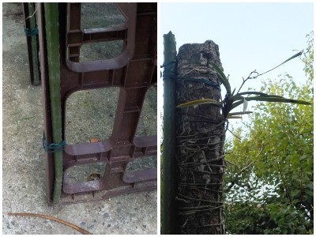

更新日 : 2026/07/26

今まで木の枝にぶら下げていた風蘭の一部を移動しました。
フラワースタンドに一部が折れて使えなくなったイボ竹をくっ付け、その先に風蘭を付けました
木は葉っぱが茂ると水も日も当たらないし、葉っぱが落ちると直射日光があたるので、これを半日陰に置いた方が快適かなと考えて作りました。
これだと霜も当たらないので、たぶん成功するんじゃないかな。
風蘭はナチュラルに置いててもあんまり楽しくないかな。
【おいしいものを食べよう。】【たくさん寝よう。】
【ソロ活をしよう!】【季節感のあることをしよう。】【動画視聴はほどほどに。】【当サイトの全てのコンテンツは無断転載禁止です。】